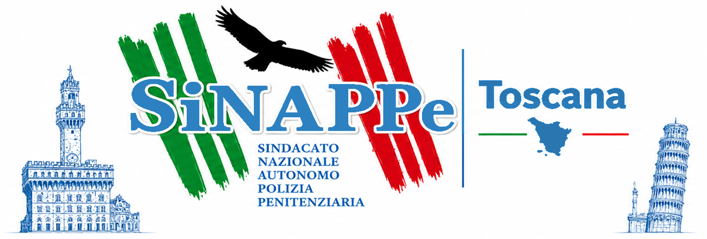
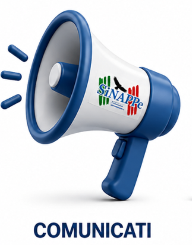
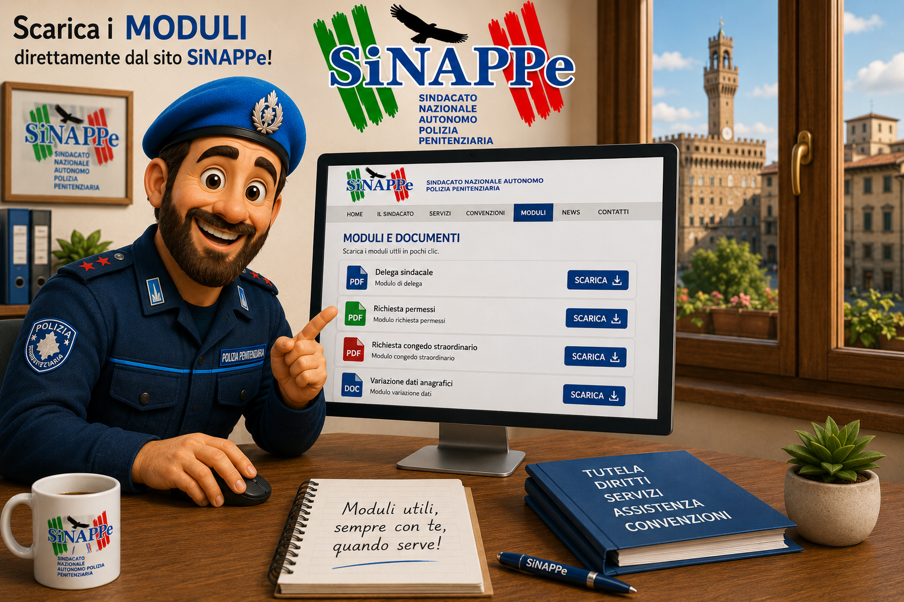
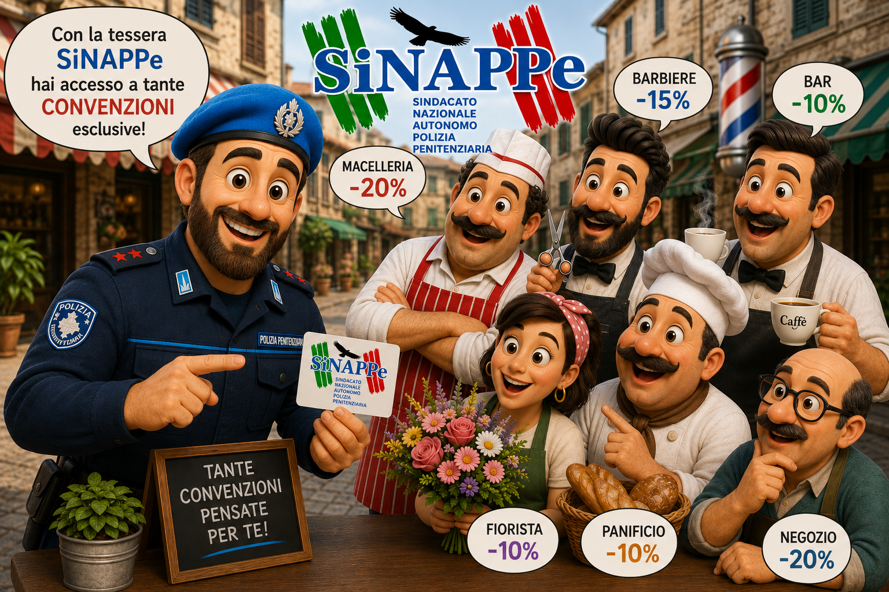
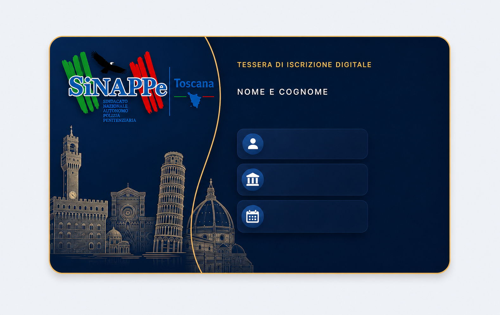
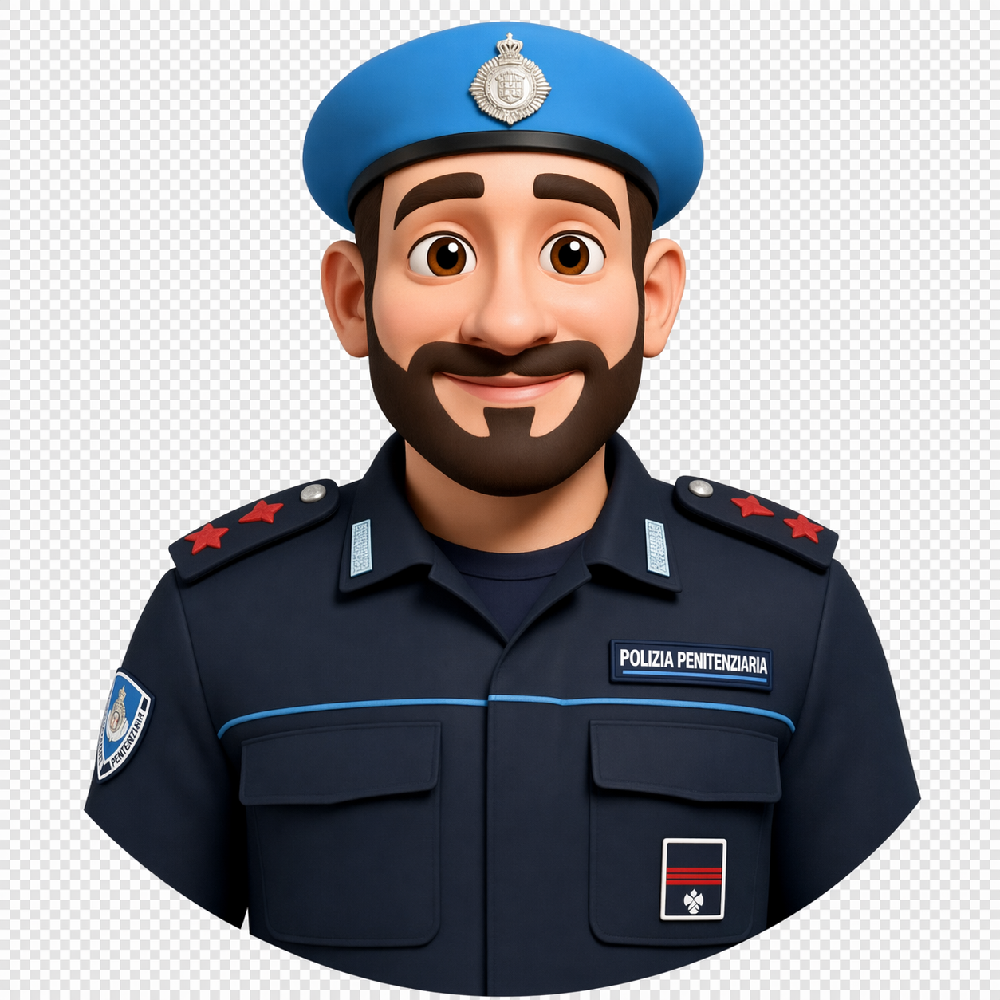

Home istituzionale
Ingresso pubblico con identita regionale, accessi rapidi e gerarchia chiara per comunicazioni, servizi e area riservata.
Portale sindacale dinamico
SiNAPPe Toscana
Portale istituzionale trasformato da sito statico a piattaforma PHP dinamica: comunicazioni pubbliche, area riservata, gestione documenti, ruoli utente, contenuti per istituto e assistente virtuale integrato.

Area riservata
Dashboard per iscritti, referenti, admin e segreteria.
Comunicati, circolari, modulistica e convenzioni gestibili dal pannello.

Comunicati e circolari
Sezioni editoriali per pubblicare aggiornamenti, note, lettere e contenuti consultabili dagli utenti.

Modulistica riservata
Archivio documenti organizzato per categorie, pensato per iscritti e segreteria.

Convenzioni e tessera
Area dedicata a convenzioni attive, tessera digitale e strumenti utili per gli iscritti.

Tessera digitale
Elemento visuale dell'area riservata per dare agli iscritti una presenza personale e riconoscibile.

Assistente virtuale
Avatar integrato nel sito per guidare gli utenti su FAQ, contatti, modulistica e informazioni ricorrenti.
Funzionalita sviluppate
Un portale pensato per comunicare, gestire e supportare gli iscritti.
Comunicati, circolari, lettere e note pubblicabili in modo ordinato, con pagina singola di dettaglio e archivio consultabile.
Dashboard diversa per iscritto, referente, admin e segreteria, con azioni disponibili in base ai permessi assegnati.
Accesso non libero: l'utente viene verificato tramite nome, cognome e matricola prima di completare l'account.
Sezione account con dati personali, istituto, avatar, cambio password e tessera digitale visualizzabile dall'area riservata.
Pannelli per note, commenti, utenti, moduli, convenzioni e pubblicita, con filtri, stati e paginazione.
Un utente approvato con ruolo referente e istituto assegnato diventa automaticamente referente attivo del proprio istituto.
Widget con avatar personalizzato, FAQ, keyword matching, risposte rapide e comportamento responsive.
Architettura predisposta al passaggio da storage JSON locale a database MySQL/MariaDB su hosting Linux.
Da sito vetrina a portale operativo.
Il progetto e stato riorganizzato con una base PHP modulare: partial condivisi, dati centralizzati, pagine dinamiche e storage locale JSON pronto per evolvere verso MySQL/MariaDB. I vecchi file HTML reindirizzano alle nuove pagine PHP, mantenendo ordinata la transizione.
- PHP con componenti condivisi per head, header, footer e widget.
- Dati centralizzati per comunicati, moduli, istituti, servizi e convenzioni.
- Preparazione al passaggio su hosting Linux con PHP, MySQL, SSL e backup.
Ruoli, contenuti e moderazione.
L'accesso non e libero: la registrazione passa da verifica di nome, cognome e matricola. Ogni utente entra con un ruolo preciso e vede strumenti coerenti con il proprio profilo operativo.
- Iscritto: legge comunicati, consulta strumenti e commenta.
- Referente: crea note del proprio istituto e modera il proprio contesto.
- Segreteria/admin: gestisce utenti, ruoli, pubblicazioni, moduli e convenzioni.
Assistente virtuale e contenuti guidati.
Il portale integra un assistente/avatar coerente con l'identita visiva del sito, pensato per aiutare l'utente su contatti, modulistica, convenzioni, comunicazioni e informazioni ricorrenti.
- Widget flottante apribile e richiudibile da desktop e mobile.
- Risposte basate su FAQ e keyword matching.
- Avatar personalizzato in stile cartoon 3D, approvato come identita visiva del progetto.